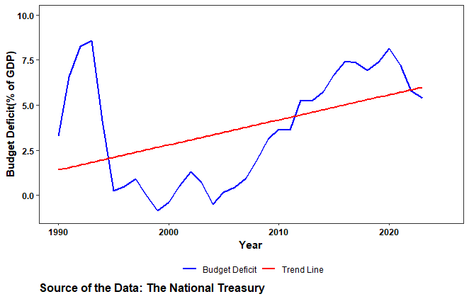
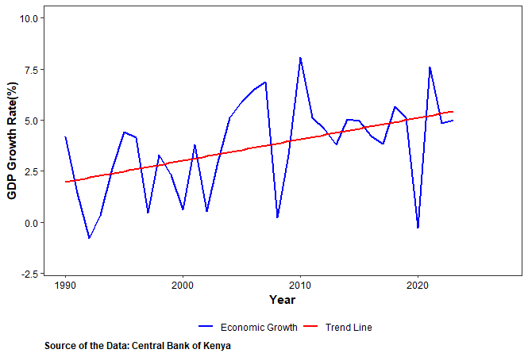
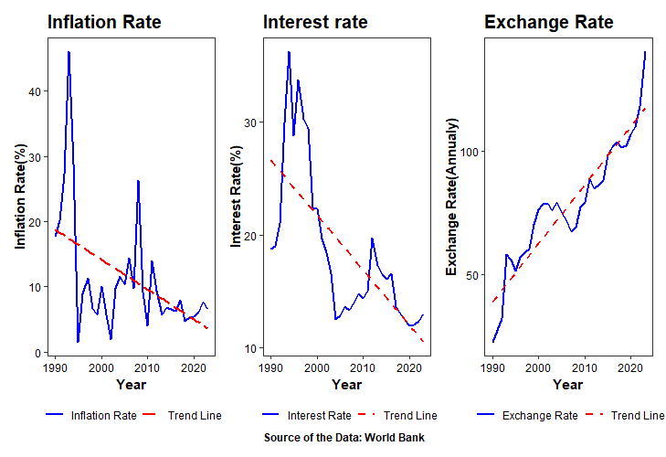

Background of the Study
Fiscal policy encompasses government decisions on taxation, spending, and borrowing aimed at shaping a country’s economy. A pivotal component of fiscal policy is the national budget, which outlines government revenue and expenditure plans for a specified period (Nizamuddin, 2021). A budget deficit occurs when government spending exceeds its revenue during a fiscal year (Dick, 2022). This deficit has profound implications for economic stability and growth. Globally, the COVID-19 pandemic precipitated an expansion in budget deficits as governments implemented extensive fiscal measures to buoy economies during periods of lockdown and reduced economic activity (Haroutunian et al., 2021). According to the International Monetary Fund (IMF), the average global budget deficit as a percentage of GDP was approximately 3.8% in 2020. Kenya, an emerging economy in Africa, has witnessed substantial economic growth over recent decades, driven by sectors such as agriculture (21.2% of GDP), manufacturing (17.7%), and services (61.1%) (Kenya National Bureau of Statistics, 2023). However, persistent budget deficits, averaging 8% of GDP over the past five years, have necessitated increased borrowing to cover shortfalls (Njarara, A., 2017). These deficits raise concerns among policymakers, economists, and international financial institutions regarding their impact on economic stability and long-term growth prospects.
Trends in the Budget Deficit
The trend of Kenya’s budget deficit from 1990 to 2023 illustrates a fluctuating fiscal landscape characterized by periods of deficit expansion and contraction. Initially stable in the mid-2000s with moderate fluctuations, recent years have seen consistently high deficits, indicating sustained fiscal challenges. Significant peaks in deficits coincide with major economic events, such as the COVID-19 pandemic in 2020, suggesting a correlation between economic stressors and fiscal deficits.

Trends in Economic Growth
Economic growth refers to the increase in the production of goods and services in an economy over a period of time. It is typically measured by the growth rate of real GDP. Economic growth is crucial for improving living standards, reducing poverty, and enhancing the overall economic health of a country. A budget deficit, which occurs when a government spends more than it earns, can influence economic growth in several ways. While deficit spending can stimulate growth by funding infrastructure, education, and other critical investments, excessive deficits might lead to higher debt levels, reducing the resources available for future growth.
 Initially, in the early 1990s, the economy appeared relatively stable, with modest fluctuations in growth rates. However, as the years progress, there are noticeable shifts in economic growth patterns. For instance, in the mid to late 1990s, there seems to be a period of sustained growth, as indicated by consistently positive growth rates. during this time, Kenya underwent significant economic reforms, including liberalization policies that aimed to open up the economy, attract foreign investment, and stimulate private sector growth. These reforms, initiated in the early 1990s, helped create a more conducive environment for business and investment, fostering economic expansion. Towards the later years of the observed period, economic growth becomes more variable, with both positive and negative growth rates recorded. These fluctuations in economic growth highlight the inherent volatility and complexity of Kenya’s economy, influenced by both domestic and international factors. Understanding these trends is one of the motivations for this study

Interest Rates are the cost of borrowing money, typically expressed as a percentage of the principal. They influence consumer and business spending, saving, and investment decisions. Budget deficits can impact interest rates through the supply and demand for credit. When the government runs a deficit, it often borrows money by issuing bonds. This increased demand for credit can drive up interest rates, known as the “crowding out” effect, where higher rates discourage private investment. However, in certain economic conditions, particularly when there is underutilized capacity, government borrowing might not lead to higher interest rates.
Exchange Rate is the value of one currency for the purpose of conversion to another. It plays a crucial role in international trade and investment flows. A budget deficit can affect the exchange rate through its influence on interest rates and investor confidence. If a deficit leads to higher interest rates, it can attract foreign capital, leading to an appreciation of the domestic currency. Conversely, persistent large deficits might raise concerns about a country’s fiscal health, leading to a depreciation of its currency as investors seek safer assets.
Inflation is the rate at which the general level of prices for goods and services is rising, eroding purchasing power. The relationship between budget deficits and inflation can be complex. In the short term, deficit spending can boost aggregate demand, potentially leading to higher prices if the economy is at or near full capacity. However, if a government finances its deficit by borrowing rather than printing money, the inflationary impact may be muted. Long-term deficits, if not managed properly, can undermine confidence in the currency, leading to higher inflation expectations and actual inflation.
Several theories argues that there is a positive effect of budget deficit on economic growth while others indicates that a budget deficit hurts economic growth. Keynesian theory developed by economist John Maynard Keynes during the 1930s argues that during economic downturns, government should engage in deficit spending to stimulate demand and boost economic activity. Classical theory viewed deficits as potentially harmful due to their impact on interest rates and private investments. Classical economists argued that government borrowing to finance budget deficits can crowd out private borrowers in the credit markets. Studies have been carried out to study the link between budget deficits and economic growth in the recent economic literature. A recent empirical work by Olaoye et al. (2023) found that fiscal deficit is the root cause of inflation in Sub-Saharan Africa (SSA) countries. According to Nizamuddin (2021) fiscal deficit is one of the causes of rising public debt and a source of economic vulnerability. Essentially, when a government consistently spends more than it earns, it needs to borrow to cover the shortfall, leading to an accumulation of debt. This reliance on borrowing can strain the economy, making it vulnerable to fluctuations in interest rates, investor sentiment, and overall economic conditions. Sharma and Mittal (2019) concluded that budget deficits hurt economic growth if they are not invested in capital formation. In contrast, similar study by Oyeleke (2021) found that budget deficits have a positive effect on economic growth. In a study conducted by Dick (2022), it was revealed that fiscal policy hinders the performance of macroeconomic indicators and the overall state of the economy. Ahmad and Aworinde (2019) did a study to see if the money governments borrow causes inflation in African countries. They found that yes, it does. This means African countries need to manage their spending better to avoid inflationary pressures. Kanchori (2020) argued that the Kenyan economy has a positive relationship with the budget deficit.
LITERATURE REVIEW
Keynesian Perspective
Keynesian economics represents a foundational theory in macroeconomics, emphasizing the role of government intervention in managing economic fluctuations, particularly during periods of recession. According to Keynesian theory, budget deficits can serve as a potent tool for stimulating aggregate demand when private sector spending declines. This decline in spending often occurs due to factors such as reduced consumer confidence, diminished investment, and increased saving during economic downturns (Bernheim, 1989). By injecting additional demand into the economy through deficit-financed government expenditure, Keynesians argue that deficits can help offset the contraction in economic activity, thereby reducing unemployment and utilizing idle resources (Barro, 1989).
Central to the Keynesian view is the concept of the multiplier effect. When the government increases spending financed through deficits, it injects new money into the economy. This initial injection stimulates consumption and investment, triggering subsequent rounds of additional spending. As a result, the overall impact on output and income levels surpasses the initial increase in government spending (Baumol, 1955). However, the effectiveness of deficit spending according to Keynesian principles hinges on specific conditions. Firstly, the economy must have idle resources and underutilized capacity to absorb increased government spending without triggering inflation. If the economy operates at full capacity, deficit spending could lead to inflation rather than boosting output. Secondly, the impact of fiscal stimulus measures on aggregate demand varies based on factors such as the marginal propensity to consume, the extent of crowding out of private investment, and the responsiveness of investment to changes in interest rates (Friedman, 1980).
Classical Economic Theories
In contrast to Keynesian economics, classical economic theories offer a different perspective on budget deficits. Classical economists argue that deficits may crowd out private investment by increasing interest rates, thereby reducing the availability of funds for private sector borrowing and investment. This phenomenon, known as the crowding-out effect, posits that government borrowing to finance deficits competes with private borrowers in the credit market, leading to higher interest rates and potentially dampening private sector investment.
Ricardian Equivalence Proposition
The Ricardian equivalence proposition presents yet another theoretical viewpoint on budget deficits. Coined by David Ricardo, this proposition suggests that consumers are forward-looking and anticipate future tax liabilities associated with government borrowing. According to this theory, individuals understand that deficits today imply higher taxes in the future to service government debt. As a result, they increase saving and reduce consumption to prepare for these expected future tax burdens. From a Ricardian perspective, deficit financing may have limited impact on aggregate demand and economic growth because households adjust their behavior to account for future fiscal obligations.
Furthermore, the Ricardian equivalence proposition argues that a debt-financed deficit does not alter the current account balance or exchange rates significantly. This perspective implies that, regardless of whether the government finances its expenditures through debt or taxes, individuals’ consumption and saving decisions remain largely unaffected, thereby limiting the stimulative effect of deficits on economic growth (Ricardo, 1817).
Sources of Data
| Variable | Source |
| GDP | CBK |
| Annual Exchange rate | World Bank |
| Budget deficit | World Bank |
| Inflation | World Bank |
| Real interest rate | World Bank |
DATA ANALYSIS AND INTERPRETATION
Descriptive Statistics
The descriptive analysis reveals several key insights into the distribution and characteristics of the variables under study. GDP, a fundamental measure of economic output, shows a mean value of 3.70 and a median of 4.17, indicating a slightly right-skewed distribution with a skewness of -0.27. The data’s kurtosis of -0.79 suggests a relatively flat distribution compared to a normal distribution, although not excessively so. Budget deficit, reflecting the fiscal health of the economy, has a mean and median both at 3.70, with a wider spread indicated by its standard deviation of 3.11. The data exhibits a slight positive skewness (0.05) and moderate platykurtosis (-1.60), implying more data points in the tails of the distribution. Real interest rates, averaging 18.59%, demonstrate variability with a standard deviation of 6.80, indicating fluctuations in borrowing costs over time. The distribution is moderately positively skewed (skewness = 1.13), suggesting more observations on the lower end of the interest rate spectrum. Inflation, with a mean of 11.17% and a median of 8.43%, shows a right-skewed distribution (skewness = 2.02) and higher kurtosis (4.28), indicating a more peaked distribution around the mean. Exchange rates, averaging 77.99 units, exhibit a standard deviation of 14.65, suggesting moderate variability in currency values. The nearly symmetrical distribution (skewness = -0.06, kurtosis = 0.05) indicates a balanced spread of data points around the mean.
| variable | minimum | maximum | mean | Median | std | skewness | kurtosis |
| GDP | -0.27 | 8.06 | 3.70 | 4.17 | 2.29 | -0.27 | -0.79 |
| Budget deficit | 0.84 | 8.57 | 3.70 | 3.66 | 3.11 | 0.05 | -1.60 |
| real interest rate | 12 | 36.24 | 18.59 | 16.54 | 6.80 | 1.13 | 0.10 |
| inflation | 1.55 | 45.98 | 11.17 | 8.43 | 9.13 | 2.02 | 4.28 |
| exchange rates | 22.91 | 139.83 | 77.99 | 77.96 | 14.65 | -0.06 | 0.05 |
Correlation Analysis
correlation measures the strength and direction of the linear relationship between two variables. The values range from -1 to 1. A correlation coefficient close to 1 indicates a strong positive linear relationship while a correlation coefficient close to -1 indicates a strong negative linear relationship. A correlation coefficient close to 0 indicates a weak or no linear relationship between the variables. Higher real interest rates are associated with lower GDP growth rates, correlation (-0.55) which is statistically significant.Higher interest rate can lead to reduced consumer and business spending, as borrowing cost increases. This reduction slows down economic growth. There is a moderate positive correlation (0.41) between GDP growth rate and exchange rate, and it is statistically significant. This suggests that a stronger exchange rate (depreciation) is associated with higher GDP growth rates. a higher exchange rate(domestic currency depreciation) can make country’s export more competitive in international market which leads to increase in export volumes, boosting economic growth. There is a negative correlation (-0.70) between interest rate and exchange rates indicating a strong inverse relationship between the two variables. This implies that periods of domestic currency depreciation(higher exchange rates) are strongly associated with periods of lower interest rate. Also a significant moderate inverse correlation(-0.53) exists between inflation and exchange rate. This indicates that higher exchange rate (weaker domestic currency) is asscociated with lower inflation and lower exchange rate(stronger domestic currency) is associated with higher inflation this is less common in most economics and kenya economics may be unique. Budget deficit has a positive moderate correlation(0.41) with exchange rates. this means that as the budget deficit increases the exchange rate also tends to increase.An increase in exchange rate implies depreciation of the domestic currency thus a positive correlation suggest that higher budget deficit are associated with weaker domestic currency.

Regression Analysis
The regression analysis reveals insightful relationships between GDP growth and its predictors-specifically inflation, real interest rates, exchange rates, and the log of deficit. The intercept of 7.35 suggests that, in the absence of any predictor variables, the expected GDP growth rate would be 7.35%. Real interest rates show a statistically significant negative coefficient of -0.28 (p = 0.001), indicating that higher interest rates are associated with lower GDP growth rates. This relationship suggests that increased borrowing costs constrain consumer and business spending, thereby dampening economic growth. Conversely, while the coefficient for inflation is 0.03, it is not statistically significant (p = 0.767), implying that changes in inflation rates within the observed range do not reliably predict changes in GDP growth. Similarly, the exchange rate coefficient of 0.02 is not statistically significant (p = 0.246), indicating that fluctuations in exchange rates do not significantly influence GDP growth in this model. The log of deficit shows a marginally significant negative coefficient of -0.47 (p = 0.050), suggesting that larger deficits are associated with lower GDP growth rates. The model’s R-squared of 0.583 indicates that approximately 58.3% of the variation in GDP growth can be explained by the included predictors, with the adjusted R-squared of 0.510 adjusting for the model’s complexity.
| gdp growth | |||
|---|---|---|---|
| Predictors | Estimates | CI | p |
| (Intercept) | 7.35 | 1.39 – 13.32 | 0.018 |
| inflation | 0.03 | -0.18 – 0.24 | 0.767 |
| interest rate | -0.28 | -0.43 – -0.13 | 0.001 |
| exg rate | 0.02 | -0.02 – 0.06 | 0.246 |
| deficit [log] | -0.47 | -0.93 – -0.00 | 0.050 |
| Observations | 28 | ||
| R2 / R2 adjusted | 0.583 / 0.510 | ||
Assumptions
$NCV
$HOMOGENEITY
$VIF
$QQ
$NORM
All assumptions of the regression analysis have been satisfactorily met, ensuring the robustness of the model’s findings. The fulfillment of these assumptions, including but not limited to linearity, independence of errors, homoscedasticity (constant variance of errors), and absence of multicollinearity among predictors, supports the validity of the regression results. These conditions enhance confidence in the relationships identified between GDP growth and its predictors-real interest rates, inflation, exchange rates, and the log of deficit. Consequently, the interpretations drawn from the regression coefficients are more reliable, providing valuable insights into the factors influencing economic growth in the context of Kenya.
Marginal Effect of each variable
The impact of each predictor variable on GDP was assessed using ggeffects, a package in R specifically designed for calculating marginal effects and predictions from statistical models. ggeffects was employed to estimate and visualize the predicted values of GDP based on changes in each predictor variable while holding other variables constant. This approach allowed for a detailed examination of how inflation, real interest rates, exchange rates, and the log of deficit individually influence GDP growth in the regression model.
$inflation
$interest_rate
$exg_rate
$deficit
Discussion of the Findings
Real interest rates show a statistically significant negative relationship with GDP growth. The coefficient of -0.28 indicates that an increase in real interest rates is associated with a decrease in GDP growth rates by approximately 0.28 percentage points, holding other variables constant. This finding underscores the importance of monetary policy in influencing economic activity. Higher interest rates tend to raise the cost of borrowing for businesses and consumers, thereby reducing investment and spending levels. Consequently, economic growth may be stifled as a result of decreased consumption and investment expenditure.
In contrast, inflation does not show a statistically significant relationship with GDP growth in the regression model. The coefficient of 0.03 with a p-value of 0.767 suggests that changes in inflation rates within the observed range do not predictably impact GDP growth in Kenya. This outcome implies that inflation, at current levels, does not pose a significant hindrance or stimulant to economic expansion, which may reflect stable inflation expectations and effective monetary policy management.
Regarding exchange rates, the regression results indicate a non-significant coefficient of 0.02 (p = 0.246). This suggests that fluctuations in exchange rates do not exert a significant influence on GDP growth in the context of Kenya. While a stronger exchange rate (domestic currency depreciation) theoretically enhances export competitiveness, thereby potentially boosting GDP through increased export volumes, the model does not detect a statistically significant effect. This finding underscores the complexity of exchange rate dynamics and their impact on overall economic performance.
The log of deficit, however, shows a marginally significant negative coefficient of -0.47 (p = 0.050). This indicates that larger deficits, as reflected in higher log values, are associated with lower GDP growth rates. The interpretation suggests that fiscal deficits, when not adequately managed or balanced with productive investments, may strain the economy by crowding out private investment and potentially leading to higher borrowing costs. This finding underscores the importance of fiscal discipline and effective allocation of public funds to support sustainable economic growth.
Overall, the regression model explains approximately 58.3% of the variance in GDP growth, with an adjusted R-squared of 0.510. This indicates that while the included variables-real interest rates, inflation, exchange rates, and deficit-account for a significant portion of the variation in GDP growth, other factors not considered in this model may also influence economic performance in Kenya.
Conclusion
The study reveals that real interest rates exert a significant negative impact on GDP growth. Higher real interest rates are associated with lower economic growth rates, highlighting the importance of prudent monetary policy in fostering a conducive environment for investment and consumption.
Secondly, inflation levels within the observed range do not significantly affect GDP growth in Kenya. This suggests that current inflation dynamics, likely influenced by effective monetary policy management, do not pose a significant obstacle to economic expansion.
Thirdly, exchange rate fluctuations do not show a statistically significant impact on GDP growth in the regression model. While a stronger exchange rate theoretically enhances export competitiveness, the model indicates that such fluctuations do not reliably predict changes in overall economic performance.
Moreover, the analysis reveals a marginally significant negative relationship between the log of deficit and GDP growth. Larger deficits, when not effectively managed or offset by productive investments, are associated with lower economic growth rates. This underscores the importance of fiscal discipline and strategic allocation of public resources to support sustainable economic development.
Overall, the regression model explains approximately 58.3% of the variance in GDP growth, with an adjusted R-squared of 0.510. This suggests that while the included variables-real interest rates, inflation, exchange rates, and deficit-account for a significant portion of GDP growth variability, there are likely other factors influencing economic performance in Kenya that warrant further exploration.
Reference
Absolom O. Nyang’au, and Joseph Abuga Orayo. 2016. “Econometric Analysis of Fiscal Performance in Kenya.” Zenodo, August. https://doi.org/10.5281/ZENODO.1466758.
Al-Khedar, S. (1996). The effects of budget deficits on the exchange rate, interest rates and trade balance: Evidence from the G-7 countries. International Economic Journal, 10(2), 71-86. [DOI: 10.1080/10168739600000012]
Amwaama, B. S.(2018). The relationship between budget deficit and economic growth in Namibia: An empirical investigation. Cogent Economics & Finance, 6(1),1-18. [DOI: 10.1080/23322039.2018.1434410]
Ariens, Sigert, Janne K. Adolf, and Eva Ceulemans. 2022. “Collinearity Issues in Autoregressive Models with Time-Varying Serially Dependent Covariates.” Multivariate Behavioral Research 58 (4): 687–705. https://doi.org/10.1080/00273171.2022.2095247.
Brooks, Mollie E, McCoy, Michael W, and Bolker, Benjamin M. 2013. “A Method for Detecting Positive Growth Autocorrelation Without Marking Individuals.” Public Library of Science (PLoS). https://doi.org/10.5167/UZH-84858.
Daba, Isubalew, Wondaferahu Mulugeta, and Atnafu Gebremeskel. 2023. “Effects of Fiscal Deficit on Economic Growth in Sub-Saharan Africa: A Dynamic Panel Data Analysis.” Journal of Science Technology and Arts Research (March): Vol. 12 No. 1 (2023). https://doi.org/10.20372/STAR.V12I1.05.
Dauti, B., & Elezi, S. (2022). Economic growth in the Central East European Union and the Western Balkan countries in the course of Stability and Growth Pact and COVID19. Zbornik Radova Ekonomskog Fakulteta u Rijeci Casopis Za Ekonomsku Teoriju i 25 Praksu/Proceedings of Rijeka Faculty of Economics Journal of Economics and Business, 40(1), 29–61. https://doi.org/ 10.18045/zbefri.2022.1.29
De Marco, Paulo, and Caroline Correa Nobrega. 2018. “Evaluating Collinearity Effects on Species Distribution Models: An Approach Based on Virtual Species Simulation.” Edited by Luciano Bosso. PLOS ONE 13 (9): e0202403. https://doi.org/10.1371/journal.pone.0202403.
Fatima, A., Abbas, F., & Abbasi, Z. (2012). An empirical analysis of budget deficit and economic growth: Evidence from Pakistan. International Journal of Business and Social Sciences, 3(17), 33-39
Frank, Lawrence D., and Andy Hong. 2018. “The Health Impacts of Rail Transit Investment: Synthesis of Evidence and Methodologies to Date.” The University of British Columbia. https://doi.org/10.14288/1.0368618.
Gulcan,Y., & Bilman, S. (2005). The impact of budget deficit on real exchange rate: The Turkish case. Applied Economics, 37(10), 1165-1174. [DOI: 10.1080/00036840500109500]
Hakkio, C. S. (1996). Budget deficits and exchange rates: Further evidence from cointegration and causality tests. Journal of International Money and Finance, 15(5), 801-814. [DOI: 10.1016/S0261-5606(96)00031-8]
Hayo, Bernd, and Florian Neumeier. 2024. “Political Leaders’ Socioeconomic Background and Public Budget Deficits: Evidence from OECD Countries.” Philipps-University Marburg, January. https://doi.org/10.17192/ES2024.0171.
Kryeziu, N. H., & Hoxha, E. (2021). Fiscal Deficit and its effects on economic growth: Empirical evidence. International Journal of Finance & Banking Studies (2147-4486), 10(1), 62–70. https://doi.org/10.20525/ijfbs.v10i1.1064
Kryeziu, N. H., & Hoxha, E. (2021). Fiscal Deficit and its effects on economic growth: Empirical evidence. International Journal of Finance & Banking Studies (2147-4486), 10(1), 62–70. https://doi.org/10.20525/ijfbs.v10i1.1064
Le Gallo, Julie, Fernando Lopez, and Coro Chasco. 2020. “Testing for Spatial Group-Wise Heteroskedasticity in Spatial Autocorrelation Regression Models: Lagrange Multiplier Scan Tests [Data Set and Code].” https://b2share.eudat.eu. https://doi.org/10.23728/B2SHARE.018E440E8B9548A79991EC7DEB231308.
Matundura Erickson, Dr. Elvis Kiano, and Dr. Alfred Serem. 2022. “Macroeconomic Drivers of Economic Growth.” Zenodo, February. https://doi.org/10.5281/ZENODO.6274395.
Mediratta, Rishi P., Thomas B. Newman, and Marie E. Wang. 2023. “Research Methods: Diagnostic Test Characteristics.” Hospital Pediatrics 13 (6): e164–69.
Obed Kerimu, Issacs Kipruto Kemboi, and Dedan Oriewo Onganya. 2022. “Effect of Selected Macroeconomic Variables on Budget Deficit in Kenya.” Zenodo, November. https://doi.org/10.5281/ZENODO.7310454.